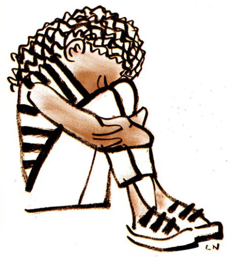
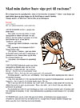
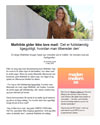

FP9 Dansk, skriftlig fremstilling
Du skal vælge en af disse opgaver:
1 Hvad tror du på?
2 Ondskab
3 Hverdagsracisme
4 At spise for at leve eller at leve for spise?
Du skal skrive den valgte opgaves nummer og titel på din besvarelse.
1 Hvad tror du på?
2 Ondskab
3 Hverdagsracisme
4 At spise for at leve eller at leve for spise?
Du skal skrive den valgte opgaves nummer og titel på din besvarelse.
Før du skriver
Til eleven
Til denne prøve i skriftlig fremstilling har du adgang til internettet.
Du må ikke kommunikere eller dele dine dokumenter med andre under prøven.
Nogle af opgaverne kræver, at du skal søge informationer på internettet til brug for din besvarelse. I andre opgaver er det en åben mulighed at søge fakta og inspiration.
Layoutet af din besvarelse indgår i vurderingen. Tænk derfor på, at du ud over tekst kan inddrage fx billeder og andre grafiske virkemidler.
Hvis du i din besvarelse anvender informationer, citater, billeder eller andre grafiske virkemidler hentet fra internettet, skal du til sidst i besvarelsen angive de væsentlige kilder.
Din besvarelse vurderes på både indhold, sprog og form. Se vurderingskriterierne nedenfor.
God arbejdslyst!
Vurderingskriterier til eleven
Der gives én karakter baseret på en helhedsvurdering af tre dimensioner: indhold, sprog og form
| Vurderingens tre dimensioner | Vurderingskriterier | Forklaring |
| Tekstens indhold | Opgavens krav | I hvor høj grad opfylder din besvarelse de krav, der er stillet i opgaven? |
| Genre og fremstillingsform | I hvor høj grad viser din besvarelse sikkerhed i at skrive i opgavens fremstillingsformer og i at anvende eventuelle genrekarakteristika? | |
| Disponering | I hvor høj grad er din besvarelse hensigtsmæssigt disponeret, hvad angår indholdets sammenhæng og rækkefølge? | |
| Relevans | I hvor høj grad er din besvarelse relevant og dækkende i forhold til tekstens hensigt, målgruppe og situation? | |
| Anvendelse af internettet | Hvis du har anvendt internettet til at søge inspiration eller information, vurderes det, hvordan og i hvor høj grad du kritisk har bearbejdet, anvendt og gjort det søgte til dit eget i din besvarelse | |
| Kildeliste | Hvis du har anvendt internettet, vurderes det, i hvor høj grad de væsentligste kilder er angivet korrekt i besvarelsen. | |
| Tekstens sprog | Sprog | I hvor høj grad er sproget i din besvarelse forståeligt, klart, varieret og tilpasset tekstens hensigt både med hensyn til ordforråd og syntaks? |
| Korrektur | I hvor høj grad er der i din besvarelse anvendt korrekt stavning, og er din tegnsætning sikker? | |
| Tekstens form | Layout | I hvor høj grad fremmer dit layout kommunikationen i forhold til det medie og den genre, du skriver i? |
1 Hvad tror du på?

Kilde: vordingborgkirke.dk
Nogle er religiøse, nogle tror på stjernetegn, og nogle tyr til videnskaben, når de skal forstå, forklare og finde mening i livet. Og nogle tror slet ikke på noget.
Hvad tror du på?
En avis vil udgive et temanummer for unge. De inviterer unge til at skrive essays om deres forhold til tro, mening med og holdepunkter i livet.
Som inspiration til essayet kan du se klippet herunder, hvor to personer fortæller om at finde mening og et fast holdepunkt i livet gennem deres religion.
Kilde: tvmidtvest.dk
|
Skriv et essay til en trykt eller en digital avis.
I dit essay skal du:
|
2 Ondskab
Et website for amatørforfattere opfordrer deres læsere til at skrive en fiktionstekst, der forholder sig til forskellige sider af ondskab. Websitet opfordrer til at skrive og indsende tekster, hvoraf de bedste vil blive offentliggjort.
Du vælger at bidrage.
Som inspiration skal du lytte til dette klip:
Kilde: dr.dk
|
Du skal skrive to tekster: en fiktionstekst med temaet "ondskab" og et kort følgebrev.
Din fiktionstekst skal:
I dit følgebrev til redaktionen skal du:
|
3 Hverdagsracisme

Kilde: politiken.dk
Klik på nedenstående link og læs uddraget af debatindlægget "Skal min datter bare sige pyt til racisme" fra Politiken.
|  |
Du har fuldt debatten omkring hverdagsracisme i Danmark og vælger at kommentere indlægget på et socialt medie.
|
Skriv en kommentar til den problematik, der rejses i debatindlægget.
Som forberedelse til din tekst skal du læse uddraget af debatindlægget. Du skal også søge yderligere oplysninger om hverdagsracisme i Danmark. I din kommentar skal du:
|
4 At spise for at leve eller at leve for spise?
Foto: Jonas Skovbjerg Fogh/Kilde: berlingske.dk
Organisationen "Madkulturen" afholder en temaaften med fokus på måltidets betydning. Spiser vi ude, spiser vi hjemme, spiser vi sammen, eller spiser vi alene? Og har det nogen betydning?
Du er inviteret til at holde et oplæg på temaaftenen, som er åben for alle interesserede. Formålet er at give indblik i unges tanker om måltidets betydning nu og i fremtiden.
Mathilde Veje har en holdning til måltider. Klik og læs derfor artiklen:
|  |
|
Du skal skrive teksten til dit mundtlige oplæg. Efterfølgende bringes teksten på sitet, madkulturen.dk.
Som forberedelse skal du læse artiklen og søge informationer om måltidets betydning. I din tekst skal du:
|